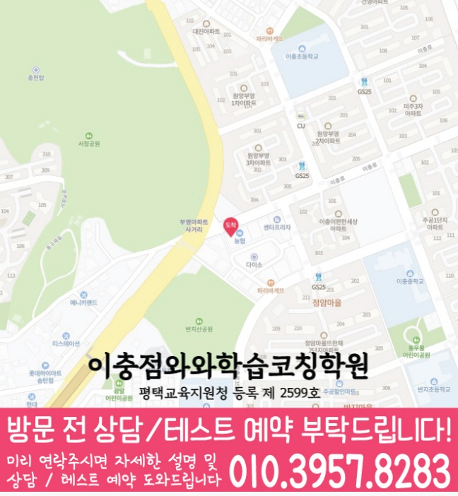

처음부터 많은 문제만 풀기보다, 개념 이해도와 풀이 습관을 먼저 확인해 학생에게 필요한 학습 순서를 잡습니다.
지역별 수강 안내
송탄학원 영어수학 전문학원
방문할 지점과 수강 조건
이충점 수강 정보
- 연결 지점
- 이충점와와학습코칭학원
- 자료에 기재된 과목
- 영어 · 수학
- 방문 주소
- 경기 평택시 이충로 49-31 삼원프라자 201호
이충점 자료에 기재된 과목별 수강 범위는 영어 초1~초6 / 중1~중3 / 고1~고2 · 수학 초1~초6 / 중1~중3 / 고1~고2입니다. 현재 모집 여부는 지점에 확인해 주세요.


이충점 방문 주소
경기 평택시 이충로 49-31 삼원프라자 201호
찾아오는 길: 이충상가 농협 옆건물 삼원프라자 2층, 1층 정관장 건물
네이버 지도에서 이충점 위치 확인 · 공통 상담 안내이미지는 그대로 읽을 수 있으며, 이미지를 누르면 확대됩니다. 작은 글씨는 확대 화면의 원본 크기로 확인하세요.
학습커리큘럼
배우는 내용과 공부의 시작점을 함께 살펴보세요
학교 진도와 현재 이해도에 맞춰 학습 범위·순서·확인 과제를 찾아보세요.
학생·학부모 교육정보
학원 정보와 함께 읽는 공부 안내
시험 준비, 과목별 공부와 학습 습관을 구체적인 예시로 확인하세요.
경기도 평택시 송탄동에서 영어·수학·국어·영수 학원을 찾는 학생을 위해, 현재 실력 진단부터 개념 정리, 문제풀이, 오답 관리까지 이어지는 학습 흐름을 안내합니다. 와와학습코칭센터는 학생마다 다른 학습 속도와 목표를 확인해 꾸준히 실력이 쌓이도록 수업과 코칭을 함께 진행합니다.
송탄동 수업의 핵심 포인트
영어는 어휘·독해·문법 흐름을 점검하고, 수학은 개념·유형·오답 원인을 나누어 관리합니다. 국어는 독해력과 개념을 함께 정리합니다.
학년별 학습 전략
초등
- 기초 연산, 어휘, 독해 습관을 안정적으로 잡습니다.
- 중등 과정으로 이어질 핵심 개념을 부담 없이 준비합니다.
중등
- 학교 진도와 내신 대비를 함께 관리합니다.
- 영어 문법과 수학 단원별 유형을 반복 점검합니다.
고등
- 내신과 수능형 문제풀이를 구분해 학습 전략을 세웁니다.
- 약한 단원, 시간 관리, 오답 패턴을 집중적으로 관리합니다.
시험 대비(내신/모의고사)
- 학교별 시험 범위와 출제 경향에 맞춰 복습 계획을 조정합니다.
- 시험 전에는 실수 유형과 자주 틀리는 문제를 우선 점검합니다.
경기도 평택시 송탄동 와와학습코칭센터(이충점)는 학생의 현재 상태를 기준으로 필요한 학습을 정리하고, 상담을 통해 영어·수학·국어·영수 학습 방향을 자세히 안내드립니다.
센터 위치 안내
주소
경기 평택시 이충로 49-31 삼원프라자 201호
오시는 길
이충상가 농협 옆 삼원프라자 2층입니다. 1층에 정관장이 있습니다.
상담에 참고할 학교 목록
학교별 내신 수업과 수강 가능 여부는 센터에 확인해 주세요.
초등학교
학교 정보는 센터에 문의해 주세요.
중학교
은혜중학교
이충중학교
효명중학교
고등학교
은혜고등학교
이충고등학교
효명고등학교
우리 학교 자료로 상담 질문 만들기
- 반지초등학교 · 이충초등학교 등 초등학교 자료: 지금 배우는 단원과 숙제 한 쪽을 가져와 혼자 읽고 설명할 수 있는 부분을 표시해 보세요.
- 은혜중학교 · 이충중학교 등 중학교 자료: 학교에서 받은 시험 범위표와 최근 답안에서 조건 읽기·개념·계산 중 막힌 지점을 표시해 보세요.
- 은혜고등학교 · 이충고등학교 등 고등학교 자료: 현재 선택 과목, 교과서 출판사, 평가 범위와 서술형 채점 기준을 함께 정리해 보세요.
학생이 실제로 받은 자료를 기준으로 비교하는 준비 방법입니다. 학교별 수업 개설이나 학교와의 협력을 뜻하지 않습니다.
과목별 수강 가능 학년
국어
수강 가능 학년은 센터에 문의해 주세요.
영어
초1
초2
초3
초4
초5
초6
중1
중2
중3
고1
고2
수학
초1
초2
초3
초4
초5
초6
중1
중2
중3
고1
고2
과학
수강 가능 학년은 센터에 문의해 주세요.
사회
수강 가능 학년은 센터에 문의해 주세요.
학원 등록 정보
교육비 참고와 확인할 조건
이충점 수업료 안내
| 대상 | 과목·과정 | 수업 구성 | 안내 금액 |
|---|---|---|---|
| 초등 | 영어·수학·국어 + 공부9도 1타임 | 영어·수학 각 주 2회 90분, 국어 주 1회 90분 | 320,000원 |
| 중등 | 영어·수학·국어 + AI + 공부9도 1타임 | 영어·수학 각 주 3회 90분, 국어 주 2회 90분 | 431,000원 |
| 고등 | 영어·수학·국어 + AI + 공부9도 1타임 | 영어·수학 각 주 3회 90분, 국어 주 2회 90분 | 644,000원 |
센터 안내 자료에 기재된 금액입니다. 수강 가능 학년, 과목, 수업 시간과 추가 프로그램에 따라 달라질 수 있으므로 최종 교습비는 센터에 확인해 주세요.
상담부터 오답관리까지 이어지는 학습 흐름
전국학원은 동네별 학원 정보를 안내할 때도 단순 위치 안내에 그치지 않고, 학생의 현재 상태를 어떻게 확인하고 관리할지 함께 살펴볼 수 있도록 구성합니다.
상담과 현재 상태 확인
학교·학년, 최근 성적, 어려운 과목, 숙제 수행, 공부 시간, 목표를 확인해 먼저 해결할 문제를 정리합니다.
교과와 학습행동 진단
개념 결손, 계산 실수, 문제 해석, 복습 부족처럼 공부가 막히는 원인을 나누어 시작 교재와 진도를 정합니다.
플래너 실행 점검
과목·단원·분량·완료 기준을 적고 실제 실행 결과를 기록해 다음 학습량과 복습 주기를 조정합니다.
오답 원인 분석과 재학습
틀린 이유를 개념, 조건 누락, 실수, 시간 부족 등으로 구분하고 유사 문제와 반복 복습으로 연결합니다.
CONSULTING CHECKLIST
송탄학원 영어수학 전문학원 상담 전 체크리스트
실제 상담 전 아래 항목을 확인하면 학생에게 필요한 영어·수학 학습 방향을 더 빠르게 정리할 수 있습니다.
- 현재 교재사용 중인 교재와 진도를 확인합니다.
- 최근 시험지점수보다 반복되는 오답 유형을 확인합니다.
- 공부 시간평소 공부 시간과 숙제 수행 정도를 봅니다.
- 상담 목표성적, 습관, 오답, 시험 대비 중 우선순위를 정합니다.
STUDY GUIDE
송탄 영어·수학 학원 선택 전 확인할 학습 포인트
송탄에서 학원을 찾을 때는 위치만큼이나 학생의 현재 학습 상태, 학교 진도, 과목별 약점, 시험 일정에 맞춰 관리가 가능한지 확인하는 것이 중요합니다.
최근 시험지와 숙제 습관을 함께 확인하면 단순 점수보다 부족한 단원과 공부 루틴을 더 정확히 파악할 수 있습니다.
영어·수학을 따로 보는 것보다 플래너, 오답, 내신 대비 흐름까지 함께 관리되는지 확인하면 상담 방향이 선명해집니다.
학년별 공부법과 시험기간 계획표를 먼저 읽어보면 상담 전 질문을 더 구체적으로 준비할 수 있습니다.
경기 평택시 송탄 상담 전 체크
최근 시험지, 학교 진도, 어려운 단원, 숙제 수행 정도를 함께 정리해두면 상담에서 학생에게 필요한 학습 순서를 더 빠르게 잡을 수 있습니다.
함께 보면 좋은 학습가이드
현재 페이지의 학년·과목과 연결되는 정보성 콘텐츠입니다. 지역 페이지와 함께 읽으면 상담 준비와 학습 계획을 더 구체화할 수 있습니다.
송탄 관련 학원 페이지
현재 보고 있는 지역 안에서 센터 안내와 학년·과목별 상세 페이지로 바로 이동할 수 있습니다.
송탄 영어수학 학원 상담이 필요하신가요?
학생의 현재 학습 상황과 목표를 정리해 상담문의로 남겨주시면, 학습 방향을 더 구체적으로 확인할 수 있습니다.
상담문의수강 전에 자주 묻는 질문
송탄에 있는 별도 지점인가요?
이 동네 안내에서 연결되는 곳은 이충점와와학습코칭학원입니다. 실제 방문 주소는 경기 평택시 이충로 49-31 삼원프라자 201호입니다.
희망 과목을 수강할 수 있나요?
위의 과목별 수강 학년 안내에서 학생의 학년과 희망 과목을 함께 확인하세요. 자료에 없는 과정과 현재 모집 여부는 지점에 문의해 주세요. 과목별 수강 조건 확인
교육비 표의 금액으로 바로 등록할 수 있나요?
지역 공통 참고표는 개별 지점의 확정 교습비가 아닙니다. 교습비 안내 자료에서 과목당 금액과 수업 시간·횟수·교재비를 확인하고 최종 비용을 상담에서 확인하세요.
안내 자료 대조: . 현재 모집·시간표·최종 비용은 지점에서 확인해 주세요.